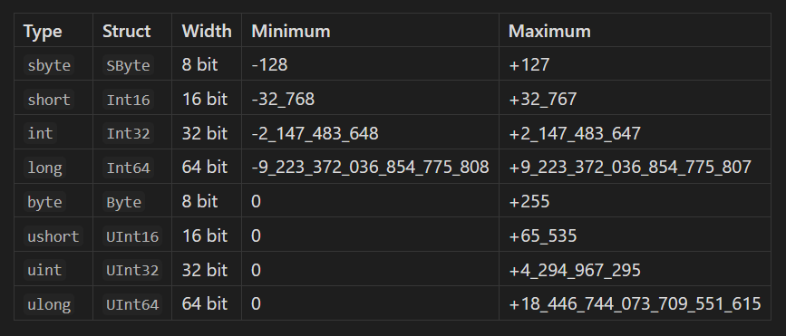

Get Started
- Sourced from Microsoft
C# is an object-oriented, component-oriented programming language. C# provides language constructs to directly support these concepts, making C# a natural language in which to create and use software components. Since its origin, C# has added features to support new workloads and emerging software design practices. At its core, C# is an object-oriented language. You define types and their behavior.
C# programs run on .NET, a virtual execution system called the common language runtime (CLR) and a set of class libraries. The CLR is the implementation by Microsoft of the common language infrastructure (CLI), an international standard. The CLI is the basis for creating execution and development environments in which languages and libraries work together seamlessly.
Several C# features help create robust and durable applications such as:
C# has a unified type system. All C# types, including primitive types such as int and double, inherit from a single root object type. All types share a set of common operations. Values of any type can be stored, transported, and operated upon in a consistent manner. Furthermore, C# supports both user-defined reference types and value types. C# allows dynamic allocation of objects and in-line storage of lightweight structures. C# supports generic methods and types, which provide increased type safety and performance. C# provides iterators, which enable implementers of collection classes to define custom behaviors for client code.
This introduction aims to provide a foundational understanding of C#, exploring its syntax, core concepts, and essential functionalities to enable you to dive confidently into the realm of C# programming.
See this references for more in-depth understanding about this language and its functionality:
C# is a statically-typed language, which means that everything has a type at compile-time. Assigning a value to a name is referred to as defining a variable. A variable can be defined either by explicitly specifying its type, or by letting the C# compiler infer its type based on the assigned value (known as type inference). Therefore, the following two variable definitions are equivalent:
int explicitVar = 10; // Explicitly typed
var implicitVar = 10; // Implicitly typed
Updating a variable's value is done through the = operator. Once defined, a variable's type can never change.
var count = 1; // Assign initial value
count = 2; // Update to new value
// Compiler error when assigning different type
// count = false;
C# is an object-oriented language and requires all functions to be defined in a class. The class keyword is used to define a class. Objects (or instances) are created by using the new keyword.
class Calculator
{
// ...
}
var calculator = new Calculator();
A function within a class is referred to as a method. Each method can have zero or more parameters. All parameters must be explicitly typed, there is no type inference for parameters. Similarly, the return type must also be made explicit. Values are returned from methods using the return keyword. To allow a method to be called by code in other files, the public access modifier must be added.
class Calculator
{
public int Add(int x, int y)
{
return x + y;
}
}
Methods are invoked using dot (.) syntax on an instance, specifying the method name to call and passing arguments for each of the method's parameters. Arguments can optionally specify the corresponding parameter's name.
var calculator = new Calculator();
var sum_v1 = calculator.Add(1, 2);
var sum_v2 = calculator.Add(x: 1, y: 2);
Scope in C# is defined between the { and } characters.
C# supports two types of comments. Single line comments are preceded by // and multi-line comments are inserted between /* and */.
An if statement can be used to conditionally execute code. The condition of an if statement must be of type bool. C# has no concept of truthy values.
The most common way to do this in C# is by using an if/else statement:
int x = 6;
if (x == 5)
{
// Execute logic if x equals 5
}
else if (x > 7)
{
// Execute logic if x greater than 7
}
else
{
// Execute logic in all other cases
}
To repeatedly execute logic, one can use loops. One of the most common loop types in C# is the while loop, which keeps on looping until a boolean condition evaluates to false.
int x = 23;
while (x > 10)
{
// Execute logic if x > 10
x = x - 1;
}
To repeatedly execute logic, one can use loops. If the code in a loop should always be executed at least once, a do/while loop can be used:
int x = 0;
do
{
x = GetX();
// do something with x
}
while (x != 0);
This is used less frequently than a while loop but in some cases results in more natural looking code.
A for loop allows one to repeatedly execute code in a loop until a condition is met.
for (int i = 0; i < 5; i++)
{
System.Console.Write(i);
}
// => 01234
A for loop consists of four parts:
-
The initializer: executed once before entering the loop. Usually used to define variables used within the loop.
-
The condition: executed before each loop iteration. The loop continues to execute while this evaluates to
true.
-
The iterator: execute after each loop iteration. Usually used to modify (often: increment/decrement) the loop variable(s).
-
The body: the code that gets executed each loop iteration.
for vs foreach loops
In general foreach-loops are preferrable over for loops for the following reasons:
-
A
foreach loop is guaranteed to iterate over all values. With a for loop, it is easy to miss elements, for example due to an off-by-o
-
A
foreach loop is more declarative, your code is communicating what you want it to do, instead of a for loop that communicates how you want to do it.
-
A
foreach loop is foolproof, whereas with for loops it is easy to have an off-by-one error.
-
A
foreach loop works on all collection types, including those that don't support using an indexer to access elements.
To guarantee that a foreach loop will iterate over all values, the compiler will not allow updating of a collection within a foreach loop:
char[] vowels = new [] { 'a', 'e', 'i', 'o', 'u' };
foreach (char vowel in vowels)
{
// This would result in a compiler error
// vowel = 'Y';
}
A for loop does have some advantages over a foreach loop:
-
You can start or stop at the index you want.
-
You can use any (boolean) termination condition you want.
-
You can skip elements by customizing the incrementing of the loop variable.
-
You can process collections from back to front by counting down.
-
You can use for loops in scenarios that don't involve collections.
Switch statements have a venerable history in programming languages. They were introduced in C where they were prized for their speed. That speed came at the cost of functionality which was very constrained. In C# the role of the switch statement has been expanded beyond integers. Switch statements can encompass any arbitrary type, value or reference.
If you are coming from a functional language then working with switch statements (and switch expressions discussed elsewhere) is the nearest you will get in C# to using discriminated unions and pattern matching. However, they have nowhere near the discriminated union's power to enforce type safety.
Simple switch statements resemble their C ancestors combining switch, case, break and default.
int direction = GetDirection();
switch (direction)
{
case 1:
GoLeft();
break;
case 2:
GoRight();
break;
default:
MarkTime();
break;
}
The above pattern can be used with any simple (primitives + strings) type.
When reference types are added into the mix then extra syntax is involved, firstly to down cast the type and then to add guards (when) although guards can be used with simple value cases. This is illustrated below:
switch(animal)
{
case Dog canine:
case Coyote canine:
canine.Bark();
break;
case Cat cat when cat.HasOnly8Lives():
cat.IsCareful();
cat.Meow();
break;
case Cat cat:
cat.Meow();
break;
}
-
The
default clause is optional but typically desirable.
-
The
break statement is mandatory for any non-empty case clause.
-
Obviously the type of all the arguments to the
case labels must be derived from the type of the switch argument. A switch argument of type Object obviously allows the widest range.
-
The guard expression can include anything in scope not just members of the
case argument.
-
Multiple
case with different case arguments can refer to the same code block.
throw expressions are an alternative to throw statements and in particular can add to the power of ternary and other compound expressions.
string trimmed = str == null ? throw new ArgumentException() : str.Trim();
If str is null in the above code an exception is thrown.
Types
chars are generally easy to use. They can be extracted from strings, added back (by means of a string builder), defined and initialised using literals with single quotes, as in char ch = 'A'; , assigned and compared.
General information on chars can be found here:
However, chars have a number of rough edges as detailed below. These rough edges mostly relate to the opposition between the full unicode standard on the one side and historic representations of text as well as performance and memory usage on the other.
Unicode Issues
When dealing with strings, if System.String library methods are available you should seek these out and use them rather than breaking the string down into characters. Some textual "characters" consist of more than one char because the unicode standard has more than 65536 code points. For instance the emojis that show up in some of the tests have 2 chars as they comprise surrogate characters. Additionally, there are combining sequences for instance where in some cases an accented character may consist of one char for the plain character and another char for the accent.
If you have to deal with individual characters you should try to use library methods such as System.Char.IsControl, System.Char.IsDigit rather than making naive comparisons such as checking that a character is between '0' and '9'. For instance, note that '٢' is the arabic digit 2. IsDigit will return true for the arabic version so you need to be clear say when validating what range of inputs is acceptable. Even the System.Char library methods may not behave as you would expect when you are dealing with more obscure languages.
One way safely to break a string into display "characters" is to use StringInfo and methods such as GetNexttextElement. This might be necessary if you are dealing with globalization/localization. Another avenue where the scalar values of unicode characters is important (say you are rolling your own encoding system) is to use runes. However, if you know the range of characters you deal with does not include surrogates or combining character sequences (e.g. Latin ASCII) and your input is well validated then you can avoid this. Again, the best position to be in is where you can use String's library methods.
If you do find yourself in the unenviable position of dealing with the minutiae of unicode then this is a good starting point.
Globalization
If you are working in an environment where you are dealing with multiple cultures or the culture is important in some parts of the code but not others then be aware of the overloads of ToUpper and ToLower which take a culture and ToUpperInvariant and ToLowerInvariant which will provide a consistent result irrespective of the current culture.
Representation, Characters and Integers
Like other simple types (ints, bools, etc.) the char has a companion or alias type, in this case, System.Char. This is in fact a struct with a 16 bit field. char in fact has some instance methods such as Equals, ToString and CompareTo.
char has the same width as a ushort but they are generally not used inter-changeably as they are in some languages. ushort has to be explicitly cast to a char. For what it's worth chars can be subject to arithmetic operations. The result of these operations is an integer.
Obviously there is no equivalence between a byte at 8 bits and the 16 bit char.
The primary object-oriented construct in C# is the class, which is a combination of data (fields) and behavior (methods). The fields and methods of a class are known as its members.
Access to members can be restricted through access modifiers, the two most common ones being:
public: the member can be accessed by any code (no restrictions).private: the member can only be accessed by code in the same class.
It is customary to specify an access modifier for all members. If no access modifier is specified, it will default to private.
The above-mentioned grouping of related data and behavior plus restricting access to members is known as encapsulation, which is one of the core object-oriented concepts.
The combination of field values of an object at any one time are known as the object's state.
You can think of a class as a template for creating instances of that class. To create an instance of a class (also known as an object), the new keyword is used:
class Car
{
}
// Create two car instances
var myCar = new Car();
var yourCar = new Car();
Fields have a type and can be defined anywhere in a class. Public fields are defined in PascalCase and private fields are defined in camelCase and prefixed with an underscore _:
class Car
{
// Accessible by anyone
public int Weight;
// Only accessible by code in this class
private string _color;
}
One can optionally assign an initial value to a field. If a field does not specify an initial value, it will be set to its type's default value. An instance's field values can be accessed and updated using dot-notation.
class Car
{
// Will be set to specified value
public int Weight = 2500;
// Will be set to default value (0)
public int Year;
}
var newCar = new Car();
newCar.Weight; // => 2500
newCar.Year; // => 0
// Update value of the field
newCar.Year = 2018;
Private fields are usually updated as a side-effect of calling a method. Such methods usually don't return any value, in which case the return type should be void:
class CarImporter
{
private int _carsImported;
public void ImportCars(int numberOfCars)
{
// Update private field
_carsImported = _carsImported + numberOfCars;
}
}
Note that is not customary to use public fields in C# classes. Either private fields are used or other types of members that will be discussed in subsequent exercises.
Within a class, the this keyword will refer to the current class. This is especially useful if a parameter has the same name as a field:
class CarImporter
{
private int carsImported;
public void SetImportedCars(int carsImported)
{
// Update private field from public method
this.carsImported = carsImported;
}
}
The class and method structure provides a natural way to limit visibility of program elements such as fields and methods and avoid the well-known problem of global state. Public fields, methods and other members have to be qualified with the object name, object.field or object.method(), (class name in the case of statics) to be seen by code outside the class. Variables and parameters declared within a method can be seen only within that method.
One thing to be wary of with this approach is that if a field name and the name of a variable or parameter in a method are the same then the field name will be ignored by code within the method which may not be what you desire. In general, you should avoid this where possible although it is a common pattern in constructors. If it is appropriate for the field and variable name to be the same then qualify the field name with the this keyword within the method.
These access modifiers can be used to further limit visibility.
There are three floating-point types in C#: double, float and decimal. The most commonly used type is double, whereas decimal is normally used when working with monetary data. A double is written as 2.45 or 2.45d, a float as 2.45f and a decimal as 2.45m.
Each floating-point type has its own precision, approximate range and size.
Some conversions between floating point types are automatic (implicit), but others are manual (explicit).
decimal account = 125m * (decimal)1.2f;
Always be careful when checking the values of floating-point types for equality, as values that can appear to represent the same value could actually be different. See this article for more information.
You can find a short introduction to floating-point numbers at 0.30000000000000004.com. The Float Toy page has a nice, graphical explanation how a floating-point numbers' bits are converted to an actual floating-point value.
C#, like many statically typed languages, provides a number of types that represent integers, each with its own range of values. At the low end, the sbyte type has a minimum value of -128 and a maximum value of 127. Like all the integer types these values are available as <type>.MinValue and <type>.MaxValue. At the high end, the long type has a minimum value of -9,223,372,036,854,775,808 and a maximum value of 9,223,372,036,854,775,807. In between lie the short and int types.
Each of the above types is paired with an unsigned equivalent: sbyte/byte, short/ushort, int/uint and long/ulong. In all cases the range of the values is from 0 to the negative signed maximum times 2 plus 1.
Values of unsigned integral types are represented with a simple base 2 representation. Values of signed types use 2s complement signed number representation.
The multiplicity of integer types reflects machine architectures, in the size of registers, the size of CPU instruction arguments and the treatment of sign within the CPU. A value of type long uses 64 bits whereas a value of type sbyte uses 8 bits. In some cases there will be implications on CPU performance, memory usage and even disk usage (where selection of a smaller integer type will generally be beneficial). Selection of integer type can also be a rough and ready wsy of communicating information to other developers about the expected range of values. The int type is widely used as the default type where nothing special has been identified about the particular usage. The long or ulong is widely used as a simple identifier. The size of the type in bytes determines the range of values.
The types discussed so far are primitive types. Each is paired with a struct alias which implements fields (such as MinValue) and methods (such as ToString()) which are associated with the type.
Casting is linked here

Overflows
The exercise (from exercism) shows the behavior of various numeric types when they overflow, i.e. when their capacity is insufficient to contain the value resulting from a computation such as an arithmetic operation or cast.
-
unsigned integers (
byte, ushort, uint, ulong) will wrap around to zero (the type's maximum value + 1 acts as a modulus) unless broadly speaking they appear within a checked block in which case an instance of OverflowException is thrown. int and long will behave similarly except that they wrap around to int.MinValue and long.minValue respectively.
int one = 1;
checked
{
int expr = int.MaxValue + one; // overflow exception is thrown
}
// or
int expr2 = checked(int.MaxValue + one); // overflow exception is thrown
-
If a literal expression would cause the variable to which it is assigned to overflow then a compile-time error occurs.
-
the
checked state applies only to expressions directly in the block. Overflow states in called functions are not caught.
-
float and double types will adopt a state of infinity that can be tested wtih float.IsInfinity() etc.
double d = double.MaxValue;
d *= 2d;
Double.IsFinite(d)
// => false
-
Numbers of type
decimal will cause an instance of OverflowException to be thrown.
-
There is a corresponding
unchecked keyword for circumstances where you want to reverse the effect of unchecked inside a checked block or when the compiler setting has been used.
Overflows that occur without an exception being thrown can be problematic because it's generally true that the earlier an error condition can be reported the better.
Problems with overflows for int and float can be mitigated by assigning the result to a variable of type long, decimal or double.
If large integers are essential to your code then using the BigInteger type is an option.
Naturally there are occasions on which it is legitimate to allow an integer to wrap around particularly in the case of unsigned values. A classic case is that of hash codes that use the width of the integer as a kind of modulo.
You will usually find in code bases that there is often no check where an uint or a ulong is used as an identifier because it is considered more trouble than it's worth. This also applies where it is evident from the domain that no very large values will be involved. But, look at this for a cautionary tale.
In C#, the null literal is used to denote the absence of a value. A nullable type is a type that allows for null values.
Prior to C# 8.0, reference types were always nullable and value types were not. A value type can be made nullable though by appending it with a question mark (?).
string nullableReferenceType = "hello";
nullableReferenceType = null; // Valid as type is nullable
int nonNullableValueType = 5;
nonNullableValueType = null; // Compile error as type is not nullable
int? nullableValueType = 5; // Define nullable value type
nullableValueType = null; // Valid as type is nullable
Accessing a member of a variable which value is null will compile fine, but result in a NullReferenceException being thrown at runtime:
string sentence = "What a nice day!";
// Throws NullReferenceException at runtime
sentence.Length;
To counter this common type of mistake, C# 8 allows one to opt-into a feature that makes reference types non-nullable by default:
string nonNullableReferenceType = "book";
nonNullableReferenceType = null; // Compile warning (no error!)
string? nullableReferenceType = "movie";
nullableReferenceType = null; // Valid as type is nullable
To safely work with nullable values, one should check if they are null before working with them:
string NormalizedName(string? name)
{
if (name == null)
{
return "UNKNOWN";
}
else
{
// Value is not null at this point, so no compile warning
// and no runtime NullReferenceException being thrown
return name.ToUpper();
}
}
NormalizedName(null); // => "UNKNOWN"
NormalizedName("Elisabeth"); // => "ELISABETH"
The ?? operator allows one to return a default value when the value is null:
string? name1 = "John";
name1 ?? "Paul"; // => "John"
string? name2 = null;
name2 ?? "George"; // => "George"
The ?. operator allows one to call members safely on a possibly null value:
string? fruit = "apple";
fruit?.Length; // => 5
string? vegetable = null;
vegetable?.Length; // => null
If the compiler thinks a value could be null but you are certain it won't be, the !. operator can be used to suppress the warning. Only use this operator as a last resort though.
void PrintName(string? name)
{
// Assume that the IsValid() method only return true
// when its argument is not null
if (IsValid(name))
{
// No compile warning
Console.WriteLine(name!.Length);
}
}
One of the key aspects of working with numbers in C# is the distinction between integers (numbers with no digits after the decimal separator) and floating-point numbers (numbers with zero or more digits after the decimal separator).
The two most commonly used numeric types in C# are int (a 32-bit integer) and double (a 64-bit floating-point number).
int i = 123;
double d = 54.29;
Both integers and floating-point numbers can use the _character as a digit separator, which can help when defining large numbers:
int largeInt = 1_000_000;
// => 1000000
double largeDouble = 9_876_543.21;
// => 9876543.21
Arithmetic is done using the standard arithmetic operators (+, -, *, etc.). Numbers can be compared using the standard comparison operators (<, >=, etc.) and the equality- operator (==) and inequality operator (!=).
5 * 6;
// => 30
1.2 > 0.8
// => true
2 != 4
// => true
When converting between numeric types, there are two types of numeric conversions:
-
Implicit conversions: no data will be lost and no additional syntax is required.
-
Explicit conversions: data could be lost and additional syntax in the form of a cast is required.
As an int has less precision than a double, converting from an int to a double is safe and is thus an implicit conversion. However, converting from a double to an int could mean losing data, so that requires an explicit conversion.
int i = 9;
double d = 2.66;
// Safe conversion, thus implicit conversion
double fromInt = i;
// Potentially unsafe conversion, thus explicit conversion
int fromDouble = (int)d;
There are two different types of numbers in C#:
-
Integers: numbers with no digits behind the decimal separator (whole numbers). Examples are
-6, 0, 1, 25, 976 and 500000.
-
Floating-point numbers: numbers with zero or more digits behind the decimal separator. Examples are
-2.4, 0.1, 3.14, 16.984025 and 1024.0.
The two most common numeric types in C# are int and double. An int is a 32-bit integer and a double is a 64-bit floating-point number.
Arithmetic is done using the standard arithmetic operators. Numbers can be compared using the standard numeric comparison operators and the equality (==) and inequality (!=) operators.
As an int has less precision than a double, converting from an int to a double is safe and is thus an implicit conversion. However, converting from a double to an int could mean losing data, so that requires an explicit conversion.
The key thing to remember about C# strings is that they are immutable objects representing text as a sequence of Unicode characters (letters, digits, punctuation, etc.). Double quotes are used to define a string instance:
string fruit = "Apple";
Manipulating a string can be done by calling one of its methods or properties. As string values can never change after having been defined, all string manipulation methods will return a new string.
A string is delimited by double quote (") characters. Some special characters need escaping using the backslash (\) character. Strings can also be prefixed with the at (@) symbol, which makes it a verbatim string that will ignore any escaped characters.
string escaped = "c:\\test.txt";
string verbatim = @"c:\test.txt";
escaped == verbatim;
// => true
If you only need a part of a string, you can use the Substring() method to extract just that part:
string sentence = "Frank chases the bus.";
string name = sentence.Substring(0, 5);
// => "Frank"
The IndexOf() method can be used to find the index of the first occurence of a string within a string, returning -1 if the specified value could not be found:
"continuous-integration".IndexOf("integration")
// => 11
"continuous-integration".IndexOf("deployment")
// => -1
Finally, there are many ways to concatenate a string. The simplest one is by using the + operator
string name = "Jane";
"Hello " + name + "!";
// => "Hello Jane!"
For any string formatting more complex than simple concatenation, string interpolation is preferred. To enable interpolation in a string, prefix it with the dollar ($) symbol.
Classes
A C# Attribute provides a way to decorate a declaration to associate metadata to: a class, a method, an enum, a field, a property or any other supported declarations.
You can apply an attribute to a declaration by adding it between brackets [] before the declaration, the following example uses both a ClassAttribute and a FieldAttribute:
[Class]
public class MyClass
{
[Field] public int myField;
}
The declarative metadata only associates additional structured information to the code and does not modify its behavior, but that metadata is used by other part of the code to change how its target would behave or add, change or remove, restrict some its functionalities.
Multiple predefined attributes exist like: Flags, Obsolete, Conditional. Note that the full name of the Flags attribute is FlagsAttribute, but "Attribute" suffix can be omitted when using in the attribute.
The following four predefined attributes are used regularly:
-
[Flags]: Predefined in the System namespace. Indicates the enum supports both bitwise operations and the method Enum.HasFlag(), additionally ToString would display all the flags: see example.
-
[Obsolete]: Predefined in the System namespace. Allows to add a message about why the code is obsolete, it can be used to display compiler warnings or errors.
-
[Conditional]: Predefined in the System.Diagnostics namespace. Allows to remove some method calls at compile time for debugging (diagnostics) purposes.
-
[CallerMemberName]: Predefined in the System.Runtime.CompilerServices namespace. Allows a method to obtain information about its caller.
A variable (or expression) of one type can easily be converted to another. For instance, in an assignment operation, if the type of the value being assigned (rhs) ensures that the value will fit within the range of the type being assigned to (lhs) then there is a simple assignment:
ulong ul;
uint ui = uint.MaxValue;
ul = ui; // no problem
On the other hand if the range of type being assigned from is not a subset of the assignee's range of values then a cast, () operation is required even if the particular value is within the assignee's range:
uint ui;
short s = 42;
ui = (uint)s;
In the above example, if the value lay instead outside the range of the assignee then an overflow would occur. See overflow.
The requirement for casting is determined by the two types involved rather than a particular value.
The following paragraphs discuss the casting of integral types. (see casting) provides a broader discussion of casting and type conversion. See that documentation for a discussion of conversion between integral types and floating-point numbers, char and bool.
Casting Primitive Types - Implicit
C#'s type system is somewhat stricter than C's or Javascript's and as a consequence, casting operations are more restricted. Implicit casting takes place between two numeric types as long as the "to" type can preserve the scale and sign of the "from" type's value.
An implicit cast is not signified by any special syntax.
Casting Primitive Types - Explicit
Where numeric types cannot be cast implicitly you can generally use the explicit cast operator.
Where the value being cast cannot be represented by the "to" type because it is insufficiently wide or there is a sign conflict then an overflow exception may be thrown.
Casting Primitive Types - Examples
int largeInt = Int32.MaxValue;
int largeNegInt = Int32.MinValue;
ushort shortUnsignedInt = ushort.MaxValue;
// implicit cast
int from_ushort = shortUnsignedInt; // 65535
float from_int = largeInt; // -21474836E+09
// explicit cast
uint from_largeInt = (uint)largeInt; // 2147483647
uint from_neg = (uint) largeNegInt; // 2147483648 or OverflowException is thrown (if checked)
Creating an instance of a class is done by calling its constructor through the new operator. A constructor is a special type of method whose goal is to initialize a newly created instance. Constructors look like regular methods, but without a return type and with a name that matches the classes' name.
class Library
{
private books;
public Library()
{
this.books = 10;
}
}
// This will call the constructor
var library = new Library();
Like regular methods, constructors can have parameters. Constructor parameters are usually stored as (private) fields to be accessed later, or else used in some one-off calculation. Arguments can be passed to constructors just like passing arguments to regular methods.
class Building
{
private int numberOfStories;
private int totalHeight;
public Building(int numberOfStories, double storyHeight)
{
this.numberOfStories = numberOfStories;
this.totalHeight = numberOfStories * storyHeight;
}
}
// Call a constructor with two arguments
var largeBuilding = new Building(55, 6.2)
Specifying a constructor is optional. If no constructor is specified, a parameterless constructor is generated by the compiler:
class Elevator
{
}
// This will call the (empty) generated constructor
var elevator = new Elevator();
If fields have an initial value assigned to them, the compiler will output code in which the assignment is actually done inside the constructor. The following class declarations are thus equivalent (functionality-wise):
class UsingFieldInitialization
{
private int players = 5;
}
class UsingConstructorInitialization
{
private int players;
public UsingConstructorInitialization()
{
players = 5;
}
}
The coding exercise illustrates a number of properties of equality in C#:
Object.Equals()
-
Simple types (strings and primitives) are typically tested for equality with the
== and !=. This is considered more idiomatic than using the Equals() method which is also available with these types. Java programmers should be alert, when dealing with strings, to the fact that == compares by value in C# but by reference in Java when returning to their former language.
-
Reference types (Instances of classes) are compared using the
Equals() method inherited from object. If your goal with the equality test is to ensure that two objects are the exact same instance then relying on object's implementation will suffice. If not, you need to override object.Equals().
-
If you know that all the instances of your class are created in one place, say characters in some game or simulation then reference equality is sufficient. However, it is likely that multiple instances of the same real-world entity will be created (for example, from a database, by user input, via a web request). In this case values that uniquely identify the entity must be tested for equality. Therefore
Equals() must be overridden.
-
An overridden
Equals() will contain equality tests on members of simple types using == and reference types with recursive calls to Equals().
class StatusBar
{
private readonly int width = 200, height = 20;
public override bool Equals(object other)
{
// ... null and type checks and performance optimisations
return width == (other as StatusBar).width && height == (other as StatusBar).height;
}
}
class Window
{
private readonly string title = "Main";
private readonly StatusBar statusBar = new StatusBar();
public override bool Equals(object other)
{
// ... null and type checks and performance optimisations
return title == (other as Window).title && statusBar.Equals((other as Window).statusBar);
}
}
The static method object.ReferenceEquals() is used to compare two objects to detect if they are one and the same instance. This provides clarity and is a necessity where Equals() and == have been overridden/overloaded.
var winA = new Window(); // above code shows that all windows are equal
var winB = new Window();
ReferenceEquals(winA, winB);
// => false
var winC = winA;
ReferenceEquals(winA, winC);
// => true
Ancillary Topics
-
In addition to
public override bool Equals(object obj) IDEs typically generate the overload protected bool Equals(FacialFeatures other) for use when inheritance is involved. A derived class can call the base classe's Equals() and then add its own test.
-
Do not use
== unless you have overloaded the == operator, as well as the Equals() method in your class (see the operator-overloading exercise) or you care only that the references are equal.
-
Equality tests in
structs are dealt with in the structs exercise.
-
Equality of
tuples is dealt with in the tuples exercise.
-
Many developers rely on their IDEs to provide implementation of equality methods as these take care of all the minutiae of equality. For instance, JetBrains' RIDER (v 2020.1) generates the following equality methods for a class:
protected bool Equals(T other)
{
return field1 == other.field1 && field2.Equals(other.field2);
}
public override bool Equals(object obj)
{
if (ReferenceEquals(null, obj)) return false;
if (ReferenceEquals(this, obj)) return true;
if (obj.GetType() != this.GetType()) return false;
return Equals((T) obj);
}
Be careful if you decide to improve on the code generated by your IDE. That code is generally bullet-proof against nulls and mistyped objects and fairly well optimized.
Tests for the equality of delegates is not specifically discussed in the exercise.
There are no built in equality tests for arrays nor most collections. LINQ (discussed in later exercises) provides SequenceEquals() but in the absence of LINQ it is a matter of iterating through both collections and comparing items individually.
For a discussion of how to use == and != with your own classes see the operator-overloading exercise.
Object.GetHashCode()
-
object.GetHashCode() returns a hash code in the form of a 32 bit integer. The hash code is used by dictionary and set classes such as Dictionary<T> and HashSet<T> to store and retrieve objects in a performant manner. In the case of dictionaries the hashing relates to the keys.
-
There is an expectation amongst C# developers that if you override
Equals() you will also override GetHashCode(). There is a relationship between Equals() and GetHashCode() that must hold true for correct behavior of dictionary and hash set classes and any others that use a hash code. You are expected to implement the method so that no traps are laid for maintainers who might add a hash code based collection at a later time.
-
The relationship between hash code and equality is that if two objects are equal (
Equal() returns true) then GetHashCode() for the two objects must return the same value. This does not apply in the reverse direction. It is not symmetrical. Picture a lookup function that first goes to a "bucket" based on the hash code and then picks out the particular item using the equality test.
-
The easiest way to create a hashcode is to call
HashCode.Combine() passing in the values used in the equality test (or a subset). Bear in mind the more information you provide to Combine() the more performant the hash implementation is likely to be.
public class Assessment
{
private int rating;
private Person boss;
public override int GetHashCode()
{
return HashCode.Combine(rating, boss);
}
}
The values used in the equality test must be stable while the hashed collection is in use. If you add an object to the collection with one set of values and then change those values the hash code will no longer point to the correct "bucket". In practice this means that the object should be immutable. Other approaches run the risk of creating gotchas for maintainers. Immutability is discussed in other exercises.
It is possible that you can design a better hashcode than that produced by the library routines but either it's because you have a detailed understanding of the data's characteristics or because it is a very simple collection where values can be used directly without hashing. It may not be worth the extra effort.
Performance Enhancements
To improve performance slightly, especially where objects belong to collections you can add an overloaded member public bool Equals(T other).
This will save a certain amount of type checking for reference types and will save a boxing step for value types as they will not need to be converted to an object (boxed) as an argument to public override bool Equals(object other).
If you add the interface IEquatable<T> to your class this will require the overload to be implemented. Unless your code contains routines that take objects of type IEquatable<T> (and presumably do something interesting relating to equality irrespective of the implementing class) there is really no other compelling to include the interface.
IEqualityComparer<T>
If you have a class that can be uniquely identified in two different ways, say a Person class that has a SSID and a unique email address then .NET provides a means to allow two different collections to use different hash-code and equality tests. Each can have an different implementation of IEqualityComparer<T> with its own an Equals() and a GetHashCode() method. You can have a dictionary keyed on SSID and another keyed on email address.
Where IEqualityComparer<T> is in play you would typically still override Equals() and GetHashCode() on your item class to avoid problems outside the collection classes.
One consideration when using IEqualityComparer<T> is that private methods etc. will not be available for the equality test.
If only one hashed collection is in play then it may be better to avoid IEqualityComparer<T> and encapsulate equality and hash code in the object itself. It is not ideal, in the first place, that a key dependency such as that between object and hashed collection cannot be enforced by the compiler but with the hashing and comparison logic elsewhere it would be even easier for a maintainer to make changes to a class's members without regard to the consequences for the collection.
Note on floating-point equality
One primitive that can challenge the unwary coder is testing the equality of floating-point values. This is discussed in the about.md document for the floating-point-numbers concept.
Equality and Inheritance
This article shows some of the decisions that have to be made with regard to equality and inheritance. They will only concern you if you are manipulating instances of a class and a derived class and need to test the equality between the two.
See this to learn more about:
Fields have a type and can be defined anywhere in a class. Public fields are defined in PascalCase and private fields are defined in camelCase and prefixed with an underscore _:
class Car
{
// Accessible by anyone
public int Weight;
// Only accessible by code in this class
private string _color;
}
One can optionally assign an initial value to a field. If a field does not specify an initial value, it will be set to its type's default value. An instance's field values can be accessed and updated using dot-notation.
class Car
{
// Will be set to specified value
public int Weight = 2500;
// Will be set to default value (0)
public int Year;
}
var newCar = new Car();
newCar.Weight; // => 2500
newCar.Year; // => 0
// Update value of the field
newCar.Year = 2018;
Private fields are usually updated as a side-effect of calling a method. Such methods usually don't return any value, in which case the return type should be void:
class CarImporter
{
private int _carsImported;
public void ImportCars(int numberOfCars)
{
// Update private field
_carsImported = _carsImported + numberOfCars;
}
}
Note that is not customary to use public fields in C# classes. Either private fields are used or other types of members that will be discussed in subsequent exercises.
In C#, a class hierarchy can be defined using inheritance, which allows a derived class (Car) to inherit the behavior and data of its parent class (Vehicle). If no parent is specified, the class inherits from the object class.
Parent classes can provide functionality to derived classes in three ways:
-
Define a regular method.
-
Define a
virtual method, which is like a regular method but one that derived classes can change.
-
Define an
abstract method, which is a method without an implementation that derived classes must implement. A class with abstract methods must be marked as abstract too. Abstract classes cannot be instantiated.
The protected access modifier allows a parent class member to be accessed in a derived class, but blocks access from other classes. Derived classes thus can access public and protected parent class members, but not private parent class members.
Derived classes can access parent class members through the base keyword.
// Inherits from the 'object' class
abstract class Vehicle
{
// Can be overridden
public virtual void Drive()
{
}
// Must be overridden
protected abstract int Speed();
}
// Cannot be inherited from
sealed class Car : Vehicle
{
public override void Drive()
{
// Override virtual method
// Call parent implementation
base.Drive();
}
protected override int Speed()
{
// Implement abstract method
}
}
The constructor of a derived class will automatically call its parent's constructor before executing its own constructor's logic. Arguments can be passed to a parent class' constructor using the base keyword. As abstract classes cannot be instantiated, their constructors can be made protected.
abstract class Vehicle
{
protected Vehicle(int wheels)
{
Console.WriteLine("Called first");
}
}
class Car : Vehicle
{
public Car() : base(4)
{
Console.WriteLine("Called second");
}
}
Where more than one class is derived from a base class the two (or more) sub-classes will often implement different versions of a base class method. This is a very important principle called polymorphism. For instance in a variation on the above example we show how code using Vehicle can change its behavior depending on what type of vehicle has been instantiated.
abstract class Vehicle
{
public abstract string GetDescription();
}
class Car : Vehicle
{
public Car()
{
}
public override string GetDescription()
{
return "Runabout";
}
}
class Rig : Vehicle
{
public Rig()
{
}
public override string GetDescription()
{
return "Big Rig";
}
}
Vehicle v1 = new Car();
Vehicle v2 = new Rig();
v1.GetDescription();
// => Runabout
v2.GetDescription();
// => Big Rig
To prevent a class being inherited, add the sealed modifier. Some practitioners try to avoid inheriting from concrete classes (as discussed in this SO question) and the sealed modifier supports this approach. On the other hand many C# developers consider them a hindrance to maintenance as discussed in some of the comments on this question. The advice is to use the sealed modifier sparingly until you have gained confidence in their use for your requirements.
The following article describes new as an alternative to the override modifier. This is occasionally useful, perhaps with convoluted class hierarchies and/or some sort of clash of libraries.
interfaces are the primary means of decoupling the uses of a class from its implementation. This decoupling provides flexibility for maintenance of the implementation and helps support type safe generic behavior.
The syntax of an interface is similar to that of a class or struct except that methods and properties appear as the signature only and no body is provided.
The implementing class or struct must implement all operations defined by the interface.
Interfaces typically do one or more of the following:
-
allow a number of different classes to be treated generically by the using code. In this case interfaces are playing the same role as a base class
-
expose a subset of functionality for some specific purpose (such as IComparable<T>) or
-
expose the public API of a class so that multiple implementations can co-exist. One example is that of a test double
public class ItalianTraveller : IItalianLanguage
{
public string Speak()
{
return "Ciao mondo";
}
public string SpeakItalian()
{
return Speak();
}
}
public class ItalianTravellerV2 : IItalianLanguage
{
public string Speak()
{
return "migliorata - Ciao mondo";
}
public string SpeakItalian()
{
return Speak();
}
}
public class FrenchTraveller : ILanguage
{
public string Speak()
{
return "Ça va?";
}
}
public class RussianTraveller : ILanguage, IScriptConverter
{
public string Version { get; set; } = "1.0";
public string Speak()
{
return "Привет мир";
}
public string ConvertCyrillicToLatin(string cyrillic)
{
throw new NotImplementedException();
}
}
public class DocumentTranslator : IScriptConverter
{
public string Version { get; set; } = "1.0";
public string Translate(string russian)
{
throw new NotImplementedException();
}
public string ConvertCyrillicToLatin(string cyrillic)
{
throw new NotImplementedException();
}
}
Code which uses the above interfaces and classes can:
-
treat all speakers in the same way irrespective of language.
-
allow some subsystem handling script conversion to operate without caring about what specific types it is dealing with.
-
remain unaware of the changes to the italian speaker which is convenient if the class code and user code are maintained by different teams
Interfaces are widely used to support testing as they allow for easy mocking.
See this article for details of what types of member can be included in an interface.
Interfaces can inherit from other interfaces.
Members of an interface are public by default.
Interfaces can contain nested types, such as const literals, enums, delegates, classes and structs. Here, the interfaces act as namespaces in the same way that classes and structs do and the behavior and syntax is identical.
By design, C# does not support multiple inheritance, but it facilitates a kind of multiple inheritance through interfaces.
Moreover, the concept of polymorphism can be implemented through interfaces underpins the interface mechanism.
Explicit interface implementation
Sometimes method names and signatures can be shared in two different interfaces. In order provide a distinct implementation of these methods, C# provides explicit implementation of interfaces. Note that to use a particular implementation of an interface you need to convert the expression containing referencing the object to that interface. Assignment, casting or passing as a parameter will achieve this.
public interface IFoo
{
void X();
}
public interface IBar
{
void X();
}
public class Census : IFoo, IBar
{
void IFoo.X()
{
Console.Write("This is from Foo");
}
void IBar.X()
{
Console.Write("This is from Bar");
}
}
public class User
{
public void Use()
{
IFoo foo = new Census();
IBar bar = new Census();
foo.X();
// => "This is from Foo"
bar.X();
// => "This is from Bar"
}
}
There are a number of use cases:
-
A clash of domains (as illustrated above) where methods have identical signatures.
-
Methods with the same name but different return types: if you implement your own collection classes you may find that an explicit interface for the legacy
IEnumerable.GetEnumerator(), alongside IEnumerable<T>.GetEnuerator(), is required. You may never make use of such the interface but the compiler may insist.
-
Methods where there is no clash of names between interfaces but it is desirable that the implementing class uses the name for some related purpose:
IFormattable has a ToString() method which takes a format type parameter as well as parameter of type IFormatProvider. A class like FormattableString from the Base Class Library (BCL) has the interface to ensure it can be used by routines that take an IFormattable but it is more expressive for its main version of
Default Implementation
Version 8 of C# addresses a nagging problem with APIs. If you add methods to an interface to enhance functionality for new implementations then it is necessary to modify all the existing implementations of the interface so that they comply with the API-contract even though they have no implementation specific behavior. C# now allows for a default method to be provided as part of the interface (Java developers will be familiar). Previously, when such a change occurred a version 2 of the interface would exist alongside the original.
This article is an excellent primer on interfaces and focuses on default implementation and other supporting innovations such as static, private and virtual members.
Ordering
To allow an object to be compared to another object, it must implement the IComparable<T> interface. This interface has a single method that needs to be implemented: int CompareTo(T other).
There are three possible return values for the CompareTo method:
-
Value smaller than zero: the current object is smaller than the other object.
-
Value greater than zero: the current object is greater than the other object.
-
Value is zero: the current object is equal to the other object.
public class Book : IComparable
{
public int PageCount { get; set; }
public int CompareTo(Book other)
{
// If other is not a valid object reference, this instance is greater.
if (other == null) return 1;
// Compare books using their number of pages
return PageCount.CompareTo(other.PageCount);
}
}
var smallBook = new Book { PageCount = 99 };
var largeBook = new Book { PageCount = 3333 };
smallBook.CompareTo(largeBook);
// => -1
The two main types of property are
-
auto-implemented properties where the
get and set accessors have no body. They may or may not be explicitly initialized. For example:
public int MyProperty {get; set;} = 42;
-
those where the accessors evaluate expressions and execute statements. The code can be as simple as returning or assigning a backing field. For example:
private int myField;
public int MyProperty
{
get { return myField; }
set { myField = value; }
}
There is considerable overlap of behavior and power between properties and methods. When they are not auto-implemented properties can contain any statement or expression that can appear within the scope of the class. In a common case they are often described as wrapping a backing field. Although much of the time it is obvious whether to code behavior as a property or method in a particular case it is often a judgement call for the coder and in particular how much code should be executed within the accessors. Validation in a set accessor and simple calculation or formatting in a get accessor are commonly found:
private float fraction;
public float Percentage
{
get { return fraction * 100; }
set
{
if (value < 0 || value > 100)
{
throw new ArgumentException("Percentage must be between 0 and 100");
}
fraction = value / 100;
}
}
In a similar way to other class members properties can have access levels. Most often properties will have a non-private access level in line with their essential purpose. Sometimes one of the accessors will have a different access level to the property. In the case of TareWeight under the rather artificial "security" constraint there was an opportunity to have a public property with a private getter. This means that code external to the class can set the value of the property but it can only be read (get) by code within the class.
public int ConfidentialValueUsedInternally {private get; set; }
Non-public set accessors are also supported but a more common case is where the set accessor may be omitted completely. This is maybe because the value of the property is set in the class's constructor.
class MyClass
{
public MyClass( int importantValue)
{
ConstructedValue = importantValue;
}
public int ConstructedValue {get;}
}
The IDisposable interface is central to resource cleanup and has two significant roles in C#:
-
It indicates to users of the implementing class that they are responsible for letting the class know (by calling the
Dispose() method) that it is no longer required so that it can release any unmanaged resources or reset its internal state as appropriate. This contrasts with the normal approach to cleaning up of allowing the garbage collector to clean everything up (principally, release memory).
-
In conjunction with the compiler and runtime the
IDisposable interface supports the using statement discussed in the resource-lifetime exercise.
It is possible but unlikely that Dispose() will be called through the interface in some sort of generic cleanup routine.
IDisposable is most commonly encountered with library classes that wrap operating system (unmanaged) resources such as System.IO.Stream and System.IO.TextReader. (Streams and TextReaders are covered in other exercises).
public class TextHandler : IDispoable
{
private TextReader reader = new TextReader(...);
public void Dispose()
{
reader.Dispose();
}
}
If a class you are using implements the IDispoable interface then you must ensure that Dispose() is called (by use of catch and finally clauses) when the instance is no longer required. If a class has a member which implements IDisposable then it may well need to implement IDisposable itself so that Dispose() can be called to dispose of the IDisposble-implementing member.
public class Activity : IDisposable
{
private MyResource myResource;
public Activity()
{
myResource = new MyResource();
}
public void Perform()
{
try
{
myResource.BeUseful();
}
catch (Exception)
{
myResource.Dispose();
}
}
public void Dispose()
{
myResource.Dispose();
}
}
The IDisposable interface may be useful even where no unmanaged resources are in the mix. Say you have a long-lived object which requires short-lived objects to register themselves with it and then unregister when they are no longer required. Implementing IDisposable on the short-lived object puts a developer using that class on notice that Dispose() needs to be called at the end of the short-lived object's life.
Dispose Pattern
You will see references in the documentation to the dispose pattern. The dispose pattern includes calling Dispose() from a class's finalizer and ensuring that disposal of resources in base classes is handled correctly. The dispose pattern is dealt with in a later exercise.
The dispose pattern mostly relates to unmanaged resources. If you are using P/Inovke mechanism and extern methods then you need to understand how and when to implement the dispose pattern. Most C# developers rarely have to deal directly with unmanaged resources in this way.
Methods
It is important to note that exceptions should be used in cases where something exceptional happens, an error that needs special handling. It should not be used for control-flow of a program, as that is considered bad design, which often leads to bad performance and maintainability.
Some of the more common exceptions include IndexOutOfRangeException, ArgumentOutOfRangeException, NullReferenceException, StackOverflowException, ArgumentException, InvalidOperationException and DivideByZeroException.
Some of the cases when exceptions should be thrown include:
-
if the method cannot complete its defined functionality
-
an inappropriate call to an object is made, based on the object state
-
when an argument to a method causes an exception
Small Tip
Exceptions use the keyword throw to followed by new to create a new instance of exception. Exceptions are usually applied inside try/catch/finally scope to identify errors and prevent the application for malfunctioning
Expression Bodied Members
Many types of struct and class members (fields being the primary exception) can use the expression-bodied member syntax. Defining a member with an expression often produces more concise and readable code than traditional blocks/statements.
public int Times3(int input) => input * 3;
public int Interesting => 1729;
Expression-bodied-members cannot have blocks of multiple statements, but those with a functional background should be warned that anything that a traditional member can do can be achieved by one of these members. The "expression" can be an assignment operation creating side effects, or a method invocation meaning that anything is possible.
Extension methods allow adding methods to existing types without creating a new derived type, recompiling, or otherwise modifying the original type.
Extension methods are static methods, but they're called as if they were instance methods on the extended type. It achieves this by using this before the type, indicating the instance we put the . on is passed as the first parameter. For client code, there's no apparent difference between calling an extension method and the methods defined in a type.
namespace MyExtensions
{
public static int WordCount(this string str)
{
return str.Split().Length;
}
}
"Hello World".WordCount();
// => 2
Extension methods are brought into scope at the namespace level. This means that if you are in different namespace to the one the extension method is defined in, it's namespace must be in a using directive first; For example, if we wanted to use the above example in our code, we would first need a using MyExtensions directive. If you are in the same namespace as the one the extension method is defined in, you can use the extension methods without a using directive.
A well-known example of extension methods are the LINQ standard query operators that add query functionality to the existing IEnumerable types. To bring these into scope we need a using System.Linq; directives.
Method overloading allows multiple methods in the same class to have the same name. Overloaded methods must be different from each other by either:
-
The number of parameter
-
The type of the parameters
There is no method overloading based on the return type.
The compiler will automatically infer which overloaded method to call based on the number of parameters and their type.
If a method has multiple optional parameters, you can specify only some of them using named arguments.
class Card
{
static string NewYear(int year = 2020, string sender = "me")
{
return $"Happy {year} from {sender}!";
}
}
Card.NewYear(); // => "Happy 2020 from me!"
Card.Card(1999); // => "Happy 1999 from me!"
Card.Card(sender: "mom"); // => "Happy 2020 from mom!
A method parameter can be made optional by assigning it a default value. When a parameter is optional, the caller is not required to supply an argument for that parameter, in which case the default value will be used. Optional parameters must be at the end of the parameter list; they cannot be followed by non-optional parameters. If a method has multiple optional parameters, you can specify only some of them using named arguments.
class Card
{
static string NewYear(int year = 2020, string sender = "me")
{
return $"Happy {year} from {sender}!";
}
}
Card.NewYear(); // => "Happy 2020 from me!"
Card.NewYear(1999); // => "Happy 1999 from me!"
Card.NewYear(sender: "mom"); // => "Happy 2020 from mom!"
An optional parameter's value must be either:
-
A constant expression (e.g.
"hi", 2, DayOfWeek.Friday, null etc.)
-
A
new expression of a value type
-
A
default expression of a value type
Operators
Booleans in C# are represented by the bool type, which values can be either true or false.
C# supports four boolean operators: ! (NOT), && (AND), || (OR), and ^ (XOR). The && and || operators use short-circuit evaluation, which means that the right-hand side of the operator is only evaluated when needed.
true || false // => true
true && false // => false
true ^ false // => true
true ^ true // => false
The three boolean operators each have a different operator precedence. As a consequence, they are evaluated in this order: not first, && second, ^ third, and finally ||. If you want to 'escape' these rules, you can enclose a boolean expression in parentheses (()), as the parentheses have an even higher operator precedence.
!true && false // => false
!(true && false) // => true
The principal arithmetic and comparison operators can be adapted for use by your own classes and structs. This is known as operator overloading.
This article is a thorough discussion of the syntax as well as which operators can be overloaded and those that can't.
Most operators have the form:
static operator ();
Cast operators have the form:
static (explicit|implicit) operator ( );
Operators behave in the same way as static methods.
-
An operator symbol takes the place of a method identifier, and they have parameters and a return type. The type rules for parameters and return type follow your intuition and you can rely on the compiler to provide detailed guidance.
-
For binary operations the first parameter takes the left-hand argument to the operation.
-
Operators have a signature comprising two parameters (in the case of binary operations) and a return type or a single parameter and return type in the case of unary operators.
-
For binary operators, one of the parameter types must be that of the declaring class.
-
In the case of type conversions either the parameter or the return type must be the type of the declaring class.
-
For incrementing and decrementing operators the parameter and return type must be that of the declaring class.
Syntax examples:
struct Point
{
decimal x;
decimal y;
public static bool operator ==(Point pt, Point ptOther)
{
return pt.x == ptOther.x && pt.y == ptOther.y;
}
public static bool operator !=(Point pt, Point ptOther)
{
return !(pt == ptOther);
}
public static Point operator *(Point pt, decimal scale)
{
var ptNew = new Point();
ptNew.x = pt.x * scale;
ptNew.y = pt.y * scale;
return ptNew;
}
public static implicit operator Point((decimal x, decimal y) xy)
{
var pt = new Point();
pt.x = xy.x;
pt.y = xy.y;
return pt;
}
public static explicit operator (decimal x, decimal y)(Point pt)
{
return (pt.x, pt.y);
}
}
It is often productive to implement an Equals() method and call it from the == operator. Similarly, for comparisons you can implement the IComparable interface. In both cases you get to kill two birds with just over one stone.
You should note that you cannot create operators from symbols that are not part of the standard set of operators. You can use only existing symbols for those operations where the documentation specifies that they can be overloaded. The operators that can be overloaded are listed here.
Note that the order of parameters is important where they differ in type. In the above example code pt * 10m is a legal expression whereas 10m * pt will not compile.
Reference
This documentation of operator overloading details the syntax
See this to learn more about:
Ternary operators allow if-conditions to be defined in expressions rather than statement blocks. This echoes functional programming approaches and can often make code more expressive and less error-prone.
The ternary operator combines 3 expressions: a condition followed by an expression to be evaluated and returned if the condition is true (the if part, introduced by ?) and an expression to be evaluated and returned if the condition is false (the else part, introduced by :).
int a = 3, b = 4;
int max = a > b ? a : b;
// => 4
Structures
Data structures that can hold zero or more elements are known as collections. An array is a collection that has a fixed size/length and whose elements must all be of the same type. Elements can be assigned to an array or retrieved from it using an index. C# arrays are zero-based, meaning that the first element's index is always zero:
// Declare array with explicit size (size is 2)
int[] twoInts = new int[2];
// Assign second element by index
twoInts[1] = 8;
// Retrieve the second element by index
twoInts[1] == 8; // => true
// Check the length of the array
twoInts.Length == 2; // => true
Arrays can also be defined using a shortcut notation that allows you to both create the array and set its value. As the compiler can now tell how many elements the array will have, the length can be omitted:
// Three equivalent ways to declare and initialize an array (size is 3)
int[] threeIntsV1 = new int[] { 4, 9, 7 };
int[] threeIntsV2 = new[] { 4, 9, 7 };
int[] threeIntsV3 = { 4, 9, 7 };
Arrays can be manipulated by either calling an array instance's methods or properties, or by using the static methods defined in the Array class.
Iteration
An array is also a collection, which means that you can iterate over all its values using a foreach loop:
char[] vowels = new [] { 'a', 'e', 'i', 'o', 'u' };
foreach (char vowel in vowels)
{
// Output the vowel
System.Console.Write(vowel);
}
// => aeiou
One could use a for loop to iterate over an array:
char[] vowels = new [] { 'a', 'e', 'i', 'o', 'u' };
for (int i = 0; i < vowels.Length; i++)
{
// Output the vowel
System.Console.Write(vowels[i]);
}
// => aeiou
However, generally a foreach loop is preferrable over a for loop for the following reasons:
-
A
foreach loop is guaranteed to iterate over all values. With a for loop, it is easy to miss elements, for example due to an off-by-one error.
-
A
foreach loop is more declarative, your code is communicating what you want it to do, instead of a for loop that communicates how you want to do it.
-
A
foreach loop is foolproof, whereas with for loops it is easy to have an off-by-one error.
-
A
foreach loop works on all collection types, including those that don't support using an indexer to access elements.
To guarantee that a foreach loop will iterate over all values, the compiler will not allow updating of a collection within a foreach loop:
char[] vowels = new [] { 'a', 'e', 'i', 'o', 'u' };
foreach (char vowel in vowels)
{
// This would result in a compiler error
// vowel = 'Y';
}
A for loop does have some advantages over a foreach loop:
-
You can start or stop at the index you want.
-
You can use any (boolean) termination condition you want.
-
You can skip elements by customizing the incrementing of the loop variable.
-
You can process collections from back to front by counting down.
-
You can use
for loops in scenarios that don't involve collections.
Related Topics
-
You should be aware that C# supports multi-dimensional arrays like
int[,] arr = new int[10, 5] which can be very useful.
-
You should also be aware that you can instantiate objects of type
System.Array with Array.CreateInstance. Such objects are of little use - mainly for interop with VB.NET code. They are not interchangeable with standard arrays (T[]). They can have a non-zero lower bound.
Dictionaries, like their equivalents in other languages such as maps or associative arrays, store key/value pairs such that a value can be retrieved or changed directly by passing the key to the dictionary's indexer property.
In addition key/value pairs can be added and removed from the dictionary. Keys, values and key/value pairs can be enumerated.
Values can be objects of any C# type, which includes primitives, structs and classes.
The Dictionary object allows keys to be objects of any type. However to ensure correct behavior at runtime keys must have an appropriate hashcode as returned by GetHashCode.
A dictionary instance cannot be safely accessed by more than one thread (not thread-safe). ConcurrentDictionary is available for multi-threading situations.
See also HashSet, ConcurrentDictionary, SortedDictionary.
Whilst there is no non-generic version of Dictionary a number of classes remain in the library to support a non-generic map. You need to be aware of the non-generic IDictionary and Hashtable mainly so that you know them when you see them. It is unlikely you would have to use them other than in maintaining an old code base.
You will often want to expose and access the dictionary by its IDictionary<TKey, TValue> interface.
Note that because of the nature of indexer properties primitive values can be modified in place, such as:
nums["some-number"] = 3;
nums["some-number"]++;
// nums["some-number"] == 4
You can use Enumeration types whenever you have a fixed set of constant values. Using an enum gives one a type-safe way of interacting with constant values. Defining an enum is done through the enum keyword. An enum member is referred to by prepending it with the enum name and a dot (e.g. Status.Active).
Each enum member is an association of a name and an int value. If the first member does not have an explicit value, its value is set to 0. If no value is explicitly defined for an enum member, its value is automatically assigned to the previous member's value plus 1.
enum Season
{
Spring, // Auto set 0
Summer = 2, // Set the value 2
Autumn, // Auto set 3
Winter = 7 // Set the value 7
}
Enums are very declarative. Compare the following two method calls:
Users.WithStatus(1)
Users.WithStatus(Status.Active)
For someone reading the code, the second version (with enum) will be easier to comprehend.
Numeric Type Enums
While the default numeric type of the values is int, it can be changed by explicitly specifying any other integral numeric type.
The following enum use the byte numeric type for its values:
enum Priority : byte
{
Low = 0,
Medium = 127,
High = 255
}
Convert to an Enum member
You should always consider using an enum whenever you want to model something like a boolean. Besides the aforementioned readability benefits, enums have another advantage over booleans: new values can always be added to an enum, whereas a boolean value will only ever be true or false. Using an enum is thus more future proof.
enum Status
{
Inactive = 0,
Active = 1
}
Status active = (Status) 1;
active == Status.Active; // True
Note that while one can cast integer values to an enum, doing so can lead to unexpected results when the integer value doesn't map to some enum value:
Status status = (Status) 2;
status == Status.Inactive; // False
status == Status.Active; // False
Parsing an enum
It's sometimes useful to convert a string to an enum member based on its name with Enum.Parse:
var input = "Inactive";
Status status = (Status)Enum.Parse(typeof(Status), input);
// Inactive
To check if a name or a value exists in the enum, you can use Enum.TryParse or Enum.IsDefined, both return a boolean indicating if the enum member exists:
bool doesExist = Enum.IsDefined(typeof(Status), "Inexistent");
// False
More examples and best practices are available here.
To allow a single enum instance to represent multiple values (usually referred to as flags), one can annotate the enum with the [Flags] attribute. By carefully assigning the values of the enum members such that specific bits are set to 1, bitwise operators can be used to set or unset flags.
[Flags]
enum PhoneFeatures
{
Call = 1,
Text = 2
}
Besides using regular integers to set the flag enum members' values, one can also use binary literals or the bitwise shift operator.
[Flags]
enum PhoneFeaturesBinary
{
Call = 0b00000001,
Text = 0b00000010
}
[Flags]
enum PhoneFeaturesBitwiseShift
{
Call = 1 << 0,
Text = 1 << 1
}
An enum member's value can refer to other enum members values:
[Flags]
enum PhoneFeatures
{
Call = 0b00000001,
Text = 0b00000010,
All = Call | Text
}
Setting a flag can be done through the bitwise OR operator (|) and unsetting a flag through a combination of the bitwise AND operator (&) and the bitwise complement operator (~). While checking for a flag can be done through the bitwise AND operator, one can also use the enum's HasFlag() method.
var features = PhoneFeatures.Call;
// Set the Text flag
features = features | PhoneFeatures.Text;
features.HasFlag(PhoneFeatures.Call); // => true
features.HasFlag(PhoneFeatures.Text); // => true
// Unset the Call flag
features = features & ~PhoneFeatures.Call;
features.HasFlag(PhoneFeatures.Call); // => false
features.HasFlag(PhoneFeatures.Text); // => true
The working with enums as bit flags tutorial goes into more detail how to work with flag enums. Another great resource is the [enum flags and bitwise operators page][alanzucconi.com-enum-flags-and-bitwise-operators].
By default, the int type is used for enum member values. One can use a different integer type by specifying the type in the enum declaration:
[Flags]
enum PhoneFeatures : byte
{
Call = 0b00000001,
Text = 0b00000010
}
A set is a collection of unique values. The default .NET implementation of a set is the HashSet<T>
The HashSet class uses each element's GetHashCode() method
By default, the GetHashCode() implementation for reference types returns a hash of its memory location. This means that different reference type objects will have a different hash code (this is known as reference equality). Value types by default return a hash of their fields/properties. This means that different value type objects with the same field/property values will have the same hash code (this is known as structural equality).
You can override the GetHashCode() implementation on your own classes, which you could use to have a reference type have structural equality.
Lists are an example of generic classes. You will also see HashSet<T> and Dictionary<T> in early exercises.
If you need a list of different types then you can use List<Object> but you will need to down cast elements that you access in from the list.
You should also be aware of System.Collections.List which you may encounter in legacy code. To all intents and purposes this behaves like List<Object>.
Lists in C# are collections of primitive values or instances of structs or classes. They are implemented in the base class library as List<T> where T is the type of the item in the list. The API exposes a rich set of methods for creating and manipulating lists.
var listOfStrings = new List();
var listOfIntegers = new List();
var listOfRandoms = new List();
var listOfBigIntegers = new List();
A collection definition typically includes a place holder in angle brackets, often T by convention. This allows the collection user to specify what type of items to store in the collection.
Unlike arrays, lists can resize themselves dynamically.
See this to learn more about LINQ
System Instances
A DateTime in C# is an immutable object that contains both date and time information. The date and time information can be accessed through its built-in properties.
Manipulating a DateTime can be done by calling one of its methods. As DateTime values can never change after having been defined, all methods that appear to modify a DateTime will actually return a new DateTime.
Comparing DateTime instances can be done using the default comparison operators (<, >, etc.). The current date (and time) can be retrieved through the DateTime.Now property.
An important aspect of dates in C# is that they are culture-dependent. As such, any DateTime method that deals with strings will be dependent on the current culture. This includes the DateTime.Parse() method that parses a string to a DateTime, as well as the DateTime class' ToString() method that converts a DateTime to a string.
In C# applications randomness is generally implemented using the System.Random class.
This article is an excellent introduction to the subject.
When becoming familiar with a library class it is always worth studying the documentation for properties and methods and their overloads.
The coding exercise highlighted a number of issues:
-
The random number generator does not require a seed.
-
Random.Next() can generate a range of integers
-
Random.Double() can generate a double between 0 and 1
-
The upper bounds in
Next(), Double() and Sample() are exclusive so that Random.Next(1,19) will yield values from 1 to 18 but not 19.
-
Once you have your random number you can do what you like with it
There are 3 patterns for implementing the last point:
-
You can get the random number and manipulate it. In the case of the coding exercise this would consist of calling
Random.NextDouble() and multiplying by 100. This piece discusses making random selections from an array.
-
You can inherit from System.Random and override the
Sample() method.
-
You can encapsulate an instance of
System.Random as a member of a class of your own, for example to generate booleans.
The numbers generated by Random are not guaranteed to be unique.
It is recommended that you instantiate System.Random as a static member. But, note that it is not thread safe.
You may see documentation discouraging the use of seedless constructors. This mostly applies to .NET Framework rather than .NET Core (which is what Exercism uses). For the full story read this.
You are advised not to use System.Random for crypto or security. See this provider and this number generator.
Thread Safety
When applied in the context of library APIs "not thread safe" is simply shorthand for saying that, if you are likely to access instances of the class through multiple concurrent threads, you should provide your own thread synchronization mechanisms or, in the case of collections, look at the possibility of using a concurrent version of the class. In the absence of these precautions, race conditions are likely to occur. If your code base does not use multiple threads, and is not likely to, then this warning is of little concern.
Using StringBuilder is seen as hugely preferable to building up strings with multiple repeated concatenations with a + or += operator. Obviously simple one off concatenations are preferable to instantiating a StringBuilder for clarity as well as performance. This is what Jon Skeet has to say about performance.